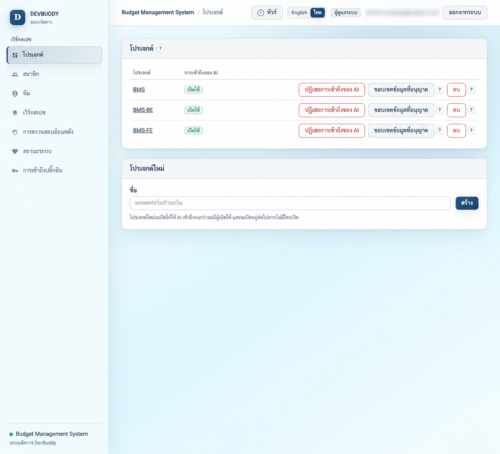
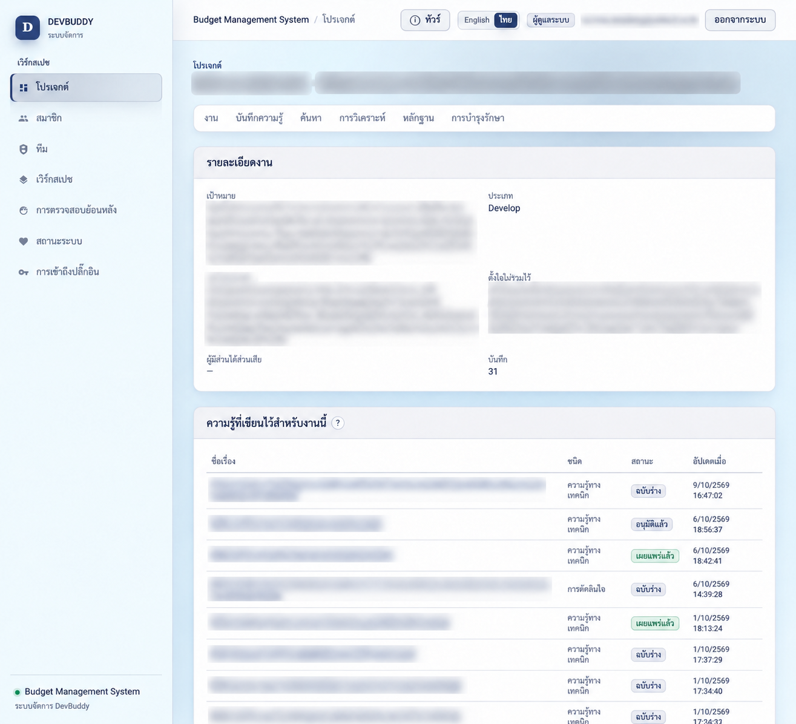
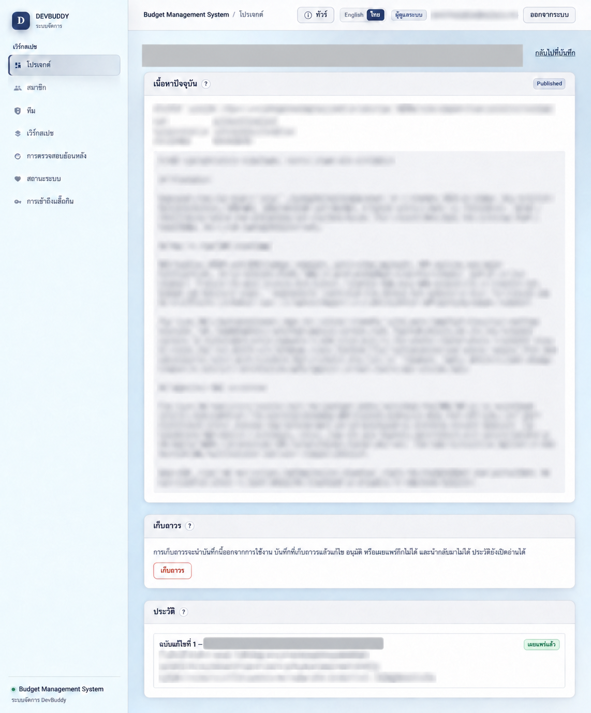
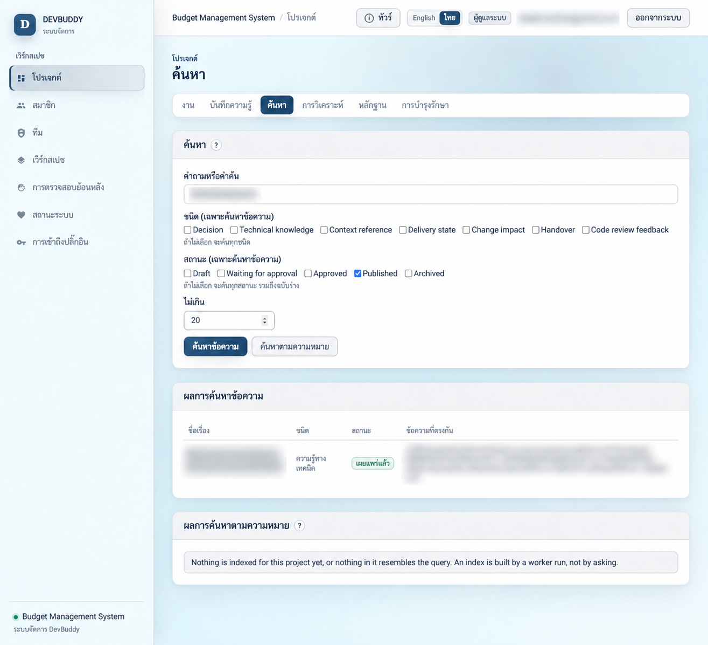

01 · CONTEXT
มี docs แต่ไม่รู้ว่าพอไหม
คนรับงานยังไม่รู้โปรเจกต์ ต้องไล่หาเอง และไม่แน่ใจว่าเอกสารหรือ KT ล่าสุดหรือเปล่า
Concept proposal · DevBuddy × REAL
ข้อเสนอการใช้ DevBuddy เพื่อเก็บข้อสรุปและกฎธุรกิจตั้งแต่ต้น พร้อมตรวจที่มาและชี้คำถามค้างเมื่อมีคนรับงานต่อ
01 / Pain
Pain ที่เจอเมื่อคนใหม่รับงานต่อในโปรเจกต์
01 · CONTEXT
คนรับงานยังไม่รู้โปรเจกต์ ต้องไล่หาเอง และไม่แน่ใจว่าเอกสารหรือ KT ล่าสุดหรือเปล่า
02 · BUSINESS GAP
เคสหรือกฎธุรกิจไม่ได้คุยไว้ ลืมบันทึก หรือจำคลาดเคลื่อน จนข้อมูลสำคัญขาดหาย
03 · CONFIRMATION
เมื่อเจอ edge case หรือ issue ใหม่ ต้องกลับไปถาม SA, BA หรือ module owner เพื่อยืนยัน
โจทย์สำคัญคือ รู้ว่าข้อมูลไหนยังใช้ได้ และเรื่องไหนยังต้องยืนยัน
02 / Pain cycle
01
มีข้อมูลเริ่มต้น แต่ไม่รู้ว่าครบหรือเป็นปัจจุบันไหม
02
เทียบเอกสาร โค้ด และคนที่เคยทำ
03
เคสใหม่หรือ issue ไม่ตรงกับสิ่งที่จำไว้
04
SA, BA หรือ owner ยืนยัน แต่คำตอบอาจไม่ถูกเก็บต่อ
สิ่งที่อยากลดคือ เวลาตรวจความใหม่ + เวลาสืบช่องว่าง + การถามเรื่องเดิมซ้ำผู้รู้ยังต้องยืนยันเรื่องธุรกิจ; แนวคิดนี้ช่วยเตรียมคำถามและเก็บคำตอบไว้ใช้ต่อ
03 / One concrete case
INPUT ที่คนใหม่ได้รับ
มี docs และ KT เดิม แต่ไม่รู้ว่ากฎการคืนเงินหลังชำระเงินยังใช้เหมือนเดิมไหม
BUSINESS GAP
เอกสารไม่ตอบ edge case นี้ คนทำงานต้องหา decision เดิมและถาม BA / owner เพื่อยืนยัน
สิ่งที่อยากได้: คำตอบที่มีที่มาและคนยืนยัน · สิ่งที่ยังไม่รู้ · test case ที่ต้องตรวจ · record ที่คนถัดไปค้นกลับมาใช้ได้
04 / Two starting points
NEW PROJECT
เก็บเป้าหมาย ขอบเขต กฎธุรกิจ decision ข้อสันนิษฐาน และเจ้าของเรื่องตั้งแต่แรก
HANDOVER PROJECT
รวบรวม docs / KT เทียบกับสิ่งที่ทำอยู่ ตรวจ revision และถามเรื่องที่ยังไม่ชัด
ความรู้ที่มีที่มาและ revision · สิ่งที่ยืนยันแล้ว · คำถามที่ยังเปิดอยู่
คนตรวจเนื้อหาก่อนเผยแพร่ เพื่อให้คนทำงานรอบถัดไปใช้เป็นจุดตั้งต้น
05 / Solution concept
kickoff / decision หรือ docs / KT ที่รับต่อ
ผูกเรื่องกับที่มา revision วันที่ และคำถามค้าง
ค้นข้อมูล ชี้จุดที่ไม่แน่ใจ และร่างคำถามเฉพาะเรื่อง
SA / BA / owner ยืนยันเรื่องธุรกิจ; Reviewer อนุมัติ record
↶ คำยืนยันที่มีที่มาและผ่านการตรวจ กลับไปเป็นบริบทของคนรับงานรอบถัดไป
06 / Input → Output
จุดเชื่อม: บันทึกที่ Published แล้วเป็นฐานให้คนถัดไปค้นใช้ พร้อมที่มาและข้อจำกัด
07 / Knowledge retrieval
ตัวอย่างคำถาม: “ยกเลิกหลังชำระเงินต้องคืนเงินอย่างไร?” → ได้ record ที่เผยแพร่แล้วพร้อมที่มา หรือรู้ชัดว่ายังต้องถาม BA
08 / Draft to published
CONTRIBUTOR / AI
ผูกงานและแหล่งที่มา AI สร้างได้ถึงขั้นร่าง
DraftCONTRIBUTOR · WEB
ตรวจเนื้อหาและหลักฐานก่อนส่ง Reviewer
PendingApprovalREVIEWER · WEB
ตรวจที่มาและหลักฐาน แล้วอนุมัติ revision ที่อ่าน
ApprovedREVIEWER · WEB
Publish ฉบับที่อนุมัติแล้วเป็นอีกขั้น
PublishedTEAM · WEB / AI
เปิดบันทึกพร้อมที่มาและ revision
Reusable knowledge09 / Team roles
ผู้รู้เรื่องยืนยันเนื้อหา · ส่วนการอนุมัติ record ในระบบยังต้องมีสิทธิ์ Reviewer
10 / REAL framework
11 / Time estimate
เวลาที่ลดได้ (%) =
(baseline − pilot) ÷ baseline × 100
หากได้ทดลอง ให้เทียบค่ามัธยฐานต่อ task ภายในกลุ่มเดียวกัน พร้อมจำนวนงานและความยาก
ตัวอย่างสมมติ: 120 → 80 นาทีต่อ task = ลด 33%
ใช้แสดงสูตรเท่านั้น ยังไม่มีผลวัดจริงในสไลด์นี้
12 / Proposed pilot
4 สัปดาห์
กรอบเวลาทดลองที่เสนอ
กำหนดวันจริงร่วมกับทีม
เลือกงานตั้งต้นใหม่และงานรับช่วง เก็บ baseline แยกสองกลุ่ม
ทดลอง บันทึก decision / คำยืนยัน เวลาสืบ และเวลารอคำตอบ
สรุป R/E/A/L แยกกลุ่ม พร้อมอัตราคำตอบที่ต้องแก้และการถามซ้ำ
เป้าหมายทดลองที่เสนอ: เวลาลงมือทำลด ≥30% โดยคุณภาพงานไม่ถอย
DevBuddy × REAL
โปรเจกต์ใหม่เก็บข้อสรุปและกฎธุรกิจตั้งแต่ต้น ส่วนงานส่งต่อใช้ฐานเดียวกันตรวจว่าอะไรยืนยันแล้ว อะไรอาจเก่า และอะไรยังต้องถาม
ข้อเสนอ: ทดลองกับงานตั้งต้นใหม่และงานรับช่วง กลุ่มละหนึ่งชุด แล้วตัดสินจากเวลา คุณภาพคำตอบ และการนำความรู้กลับมาใช้
Appendix A / System architecture
HUMAN · WEB
ตั้งค่าโปรเจกต์ ค้นความรู้ ตรวจ draft อนุมัติ และดูประวัติ
AI · PLUGIN / SKILL
Claude / Codex / Cowork ใช้ plugin เพื่อค้น วิเคราะห์ และเตรียมส่งต่องาน
SHARED · API + MCP
รับคำขอผ่าน API หรือ MCP และตรวจสิทธิ์ทุกครั้ง
KNOWLEDGE · DATA
งาน บันทึก ข้อสรุป ที่มา revision และหลักฐาน
Search / index ค้นคำเป็นฐาน; semantic index เปิดเพิ่มได้เมื่อพร้อม
Review / audit ให้คนยืนยันฉบับที่เผยแพร่และตามรอยได้
Deploy / policy กำหนดขอบเขตโปรเจกต์และการเข้าถึงของ AI
Appendix B / Access roles
Viewer
ค้นและอ่านความรู้
เพื่อรับช่วงงาน
Contributor
วิเคราะห์งานและสร้าง draft
พร้อมที่มา
Reviewer
ตรวจ revision อนุมัติ
หรือส่งกลับก่อนเผยแพร่
Administrator กำหนดสมาชิก สิทธิ์ project และนโยบาย AI access ให้ทุกขั้น
IndexMaintainer ให้ worker รายงานบันทึกที่ไม่ได้แก้นานเกินเกณฑ์ด้วยสิทธิ์เฉพาะ
ลูกศรแสดงการส่งต่องาน ไม่ใช่ลำดับขั้นของสิทธิ์; IndexMaintainer ไม่ใช่บทบาทที่สูงกว่า Administrator
Appendix C / BMS example · redacted

ตัวอย่าง BMS แสดงโปรเจกต์ที่เกี่ยวข้องใน workspace เดียวกัน การเก็บความรู้จึงต้องระบุ project และขอบเขตการเข้าถึงตั้งแต่ต้น
ภาพแก้ไขเพื่อปิดข้อมูลอ่อนไหว ใช้อธิบายหน้าจอและแนวคิด ไม่ใช้ยืนยันข้อความทุกจุด
Appendix C / BMS example · redacted

คนรับช่วงงานควรเห็นเป้าหมาย ขอบเขต และบันทึกที่เกี่ยวข้อง พร้อมแยกว่า Draft, Approved และ Published มีขอบเขตการใช้งานต่างกัน
ปิดรหัสงาน ชื่อบันทึก และเนื้อหารายละเอียดแล้ว
Appendix C / BMS example · redacted

แนวคิดคือเก็บที่มา วันที่ตรวจ และข้อจำกัดของข้อสรุป เพื่อให้คนรับช่วงรู้ว่าอะไรเคยยืนยัน และอะไรควรตรวจอีกครั้ง
ภาพนี้แสดงโครงหน้าบันทึก ไม่เปิดเผยชื่อหรือเนื้อหาบันทึกจริง
Appendix C / BMS example · redacted

ผู้ค้นได้รายการบันทึกที่เปิดตรวจต่อได้ ตัวอย่างนี้มีผลจากการค้นข้อความ ส่วนช่องค้นตามความหมายยังไม่คืนผล จึงไม่ใช้เป็นหลักฐานว่าดัชนี semantic พร้อมแล้ว
ปิดคำค้น ชื่อผลลัพธ์ และข้อความรายละเอียดแล้ว